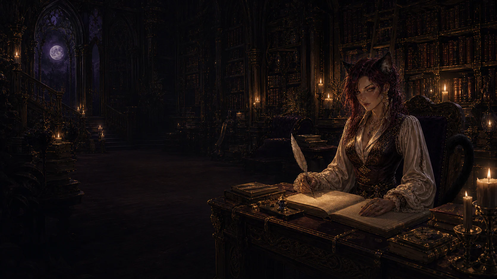

Make room for another world
A place for your stories.
Follow the cast. Steer what unfolds. Step into a character only if you want to.
Start a story
Your stories
Reusable inspiration
Worlds
Create worlds, characters and Scribes with uploaded or AI-painted images. Choosing them at story setup makes independent copies. Catalogue changes never rewrite an existing story.
No avatar required
Where shall we begin?
Choose an opening or give the story a situation worth exploring. Starting makes no AI request.
Chronicle
Every path leaves a trace
Browse bounded history on any path. Browsing is read-only. The active-path selector below explicitly changes the destination for future actions.
Episodes
Gallery
An image belongs somewhere
Current cover, frozen reference images and illustrations in the loaded history window. This is not yet a complete inventory of unplaced or older art.
Gate
Make a work worth keeping
A book includes the active reading path. A private save keeps every path and can contain hidden story information.
Keep your story
The server stores story history. Your reading position is remembered on this device. Download a private playable save to preserve all paths, story-owned images and private state; credentials and paid permissions never travel.
Recent model calls and costs
Settings
Choose a provider and model. Credentials never go into stories, browser storage or exported saves.
Return to your workspaceReading on this device
Rain tapped at the window. For a while, they let the silence be enough.
Paid approvals on this device
Reset future approval without deleting credentials or cancelling work already requested.